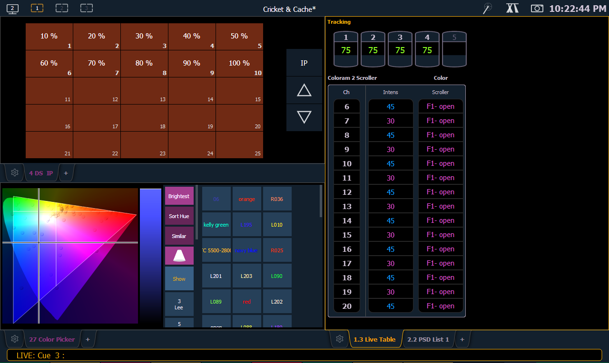

Displays
There are several terms that are useful to know when discussing the displays on your console:
- Monitors - refers to any physical monitor or touchscreen device connected to your console. The monitor number will display in the upper left corner of the screen.
- Workspaces - offers independent display control on all of your connected monitors. Every monitor can have up to three workspaces.
- Frames - offers layout options to your workspaces.
- Tabs - offers the ability to view multiple displays in one frame.
- Displays - are the individual views or tools available for use in programming your console. They are viewed in tabs.
Element has the ability to have one of three different workspaces active on individual monitors, as well as to have up to four frames in use in any workspace. Each frame can hold multiple tabs. Each tab contains one display.
